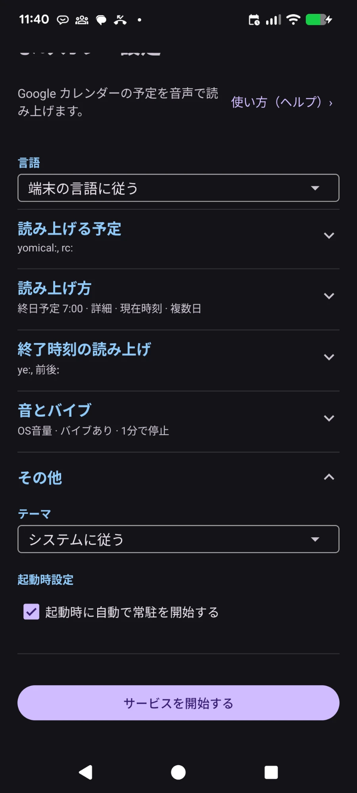
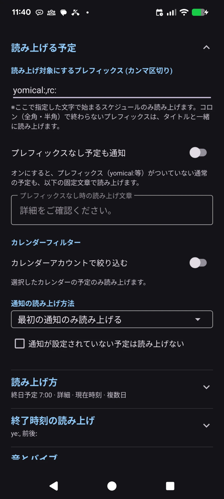
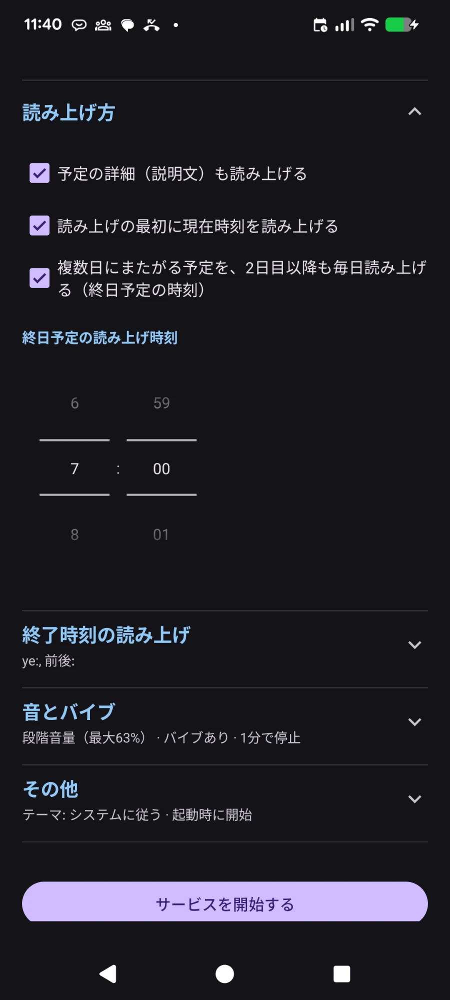
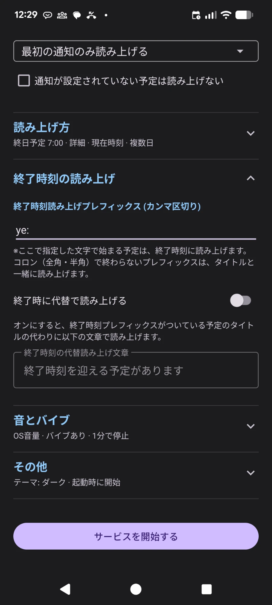
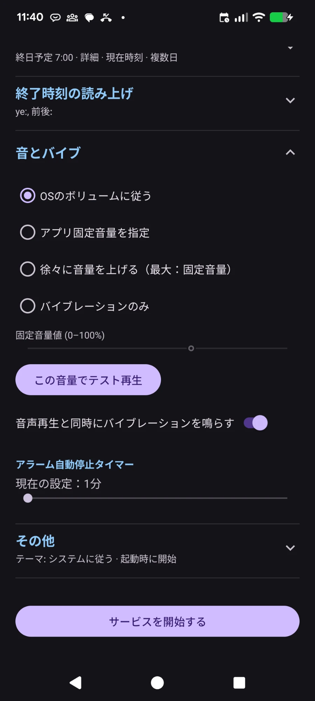

Qu'est-ce que YomiCal ?
YomiCal lit à voix haute (TTS) vos événements Google Agenda au volume que vous avez choisi.
C'est une app Android qui ne fait que ça.
Fonctions
À l'heure du rappel de chaque événement, YomiCal le lit en TTS au volume que vous avez défini.
Il ne se contente pas de sonner : il vous dit de quel événement il s'agit, ce qui évite les situations suivantes.
Ça vous est déjà arrivé ?
- Le son de notification est si court ou si faible qu'il passe inaperçu.
- Pour savoir quand un événement se termine, il faut créer un autre événement, et on l'oublie parfois.
- Le téléphone est en mode vibreur et le rappel vous échappe.
- Sans que vous le remarquiez, le téléphone est passé en mode silencieux.
- L'événement s'affiche dans les notifications, mais vous ne le voyez pas.
- Vous avez réglé une alarme à l'heure de l'événement, mais vous ne vous rappelez plus pourquoi.
- Vous coupez l'alarme par réflexe et oubliez l'événement.
- Un événement sur plusieurs jours, comme un voyage, vous sort de la tête en cours de route.
YomiCal lit le contenu même de l'événement à un volume fixe, pour que rien ne vous échappe.
Réglages
Les réglages sont regroupés en cinq sections selon leur usage. Touchez le titre d'une section pour l'ouvrir ou la fermer ; une fois fermée, un résumé des réglages actuels s'affiche sous le titre. Les réglages sont enregistrés dès que vous les modifiez.
Les captures d'écran montrent l'interface en japonais.

Langue
Choisissez la langue de l'interface et de la lecture. Langues prises en charge : japonais, anglais, coréen, chinois (simplifié), espagnol, français, allemand, portugais et italien.
- Suivre la langue de l'appareil : utilise la langue de l'appareil pour l'affichage et la lecture. Si elle n'est pas prise en charge, l'anglais est utilisé.
- Si l'appareil n'a pas de voix pour la langue choisie, la lecture se fait en anglais.
- Si le titre d'un événement est dans une autre langue (par exemple un titre japonais avec le réglage en français), cette partie est lue avec la voix de cette langue.
Autres
- Thème : choisissez « Suivre le système », « Clair » ou « Sombre ».
- Démarrer automatiquement au démarrage de l'appareil : YomiCal se relance tout seul après un redémarrage.
Démarrer le service
Le bouton en bas de l'écran démarre le service de lecture et vérifie les autorisations nécessaires. Les réglages sont déjà enregistrés lorsque vous les modifiez ; ce bouton ne sert pas à les enregistrer.

Préfixes à lire (séparés par des virgules)
Seuls les événements dont le titre commence par l'un de ces préfixes sont lus. Pour en indiquer plusieurs, séparez-les par des virgules (,).
* Selon que le préfixe se termine ou non par deux-points (: ou ： pleine chasse), le préfixe lui-même est lu ou non.
- Se termine par deux-points (ex.
yomical:) : le préfixe n'est pas lu. «yomical:Dentiste » → « Dentiste » - Ne se termine pas par deux-points (ex.
Réunion) : le préfixe est lu avec le titre. « Réunion hebdo » → « Réunion hebdo »
yomical:,rc: et créez l'événement « yomical:Dentiste » dans votre agenda ; il sera lu.Annoncer aussi les événements sans préfixe
Si cette option est activée, les événements ordinaires sans préfixe sont aussi annoncés avec le texte de votre choix. Le contenu n'est pas lu : YomiCal signale seulement qu'il y a un événement.
Si le texte est vide, le texte par défaut (« Veuillez consulter les détails. ») est utilisé.
Filtre d'agendas
Activez « Filtrer par compte d'agenda » pour ne lire que les événements des comptes choisis. Pratique pour exclure un compte professionnel ou dédier un compte à la lecture.
Mode de lecture des rappels
Choisissez le comportement lorsqu'un événement a plusieurs rappels (par exemple 30 et 10 minutes avant).
- Lire uniquement le premier rappel : lecture unique, au rappel le plus tôt.
- Lire chaque rappel séparément : lecture à chaque rappel.
Ne pas lire les événements sans rappel
Si cette case est cochée, les événements sans rappel ne sont pas lus (sauf les événements sur toute la journée).

Lire aussi la description de l'événement
Après le titre, lit aussi le champ de description de l'événement.
Annoncer d'abord l'heure actuelle
Au début de la lecture, l'heure actuelle est annoncée. À chaque répétition, c'est l'heure du moment.
Lire chaque jour les événements sur plusieurs jours
Les événements qui durent plusieurs jours, comme un voyage, sont lus chaque jour à partir du deuxième jour, à l'heure des événements sur toute la journée, comme événement « toute la journée ». Le dernier jour, ils sont lus si l'événement est encore en cours à cette heure-là.
Heure de lecture des événements sur toute la journée
Les événements sur toute la journée n'ont pas d'heure de début ; choisissez ici l'heure de leur lecture. Les événements sur plusieurs jours sont aussi lus à cette heure à partir du deuxième jour.
Par défaut : 7:00

Lecture à l'heure de fin
Les événements qui commencent par l'un des « Préfixes de lecture à l'heure de fin » (séparés par des virgules) sont lus à leur heure de fin. Inutile de créer un événement séparé pour la fin.
Si vous indiquez la même valeur que pour les préfixes à lire, l'événement est lu au début et à la fin. Les deux-points fonctionnent comme pour les préfixes à lire.
ye: et créez « ye:Réunion » ; vous serez prévenu à la fin de la réunion.Lire un texte de remplacement à la fin : si activé, le texte de votre choix est lu à la place du titre de l'événement.
Si le texte est vide, le texte par défaut (« Un événement se termine bientôt ») est utilisé.

Volume
Choisissez comment le volume de lecture est déterminé.
- Suivre le volume du système : lit au volume réglé sur l'appareil.
- Utiliser un volume fixe pour l'app : lit au volume du curseur (0–100 %), quel que soit le volume de l'appareil.
- Augmenter progressivement le volume (max : volume fixe) : commence à 3/5 du volume du curseur, puis passe à 4/5 et 5/5 toutes les 5 secondes.
- Vibration uniquement : prévient seulement par vibration, sans son.
« Tester ce volume » se répète comme une vraie lecture, pour vérifier comment elle s'entend. Le volume d'alarme modifié pendant la lecture est rétabli à la fin.
Vibrer pendant la lecture
L'appareil vibre pendant la lecture.
Minuterie d'arrêt automatique
Réglez avec le curseur la durée avant l'arrêt automatique de l'alerte (1–15 minutes). Même si vous oubliez de l'arrêter, elle s'arrête une fois ce délai écoulé.
Par défaut : 5 minutes
Fonctionnement
Lecture
- Par sécurité, seuls les événements portant un préfixe configuré sont lus.
- Avec le filtre d'agendas, vous pouvez aussi ne lire que les événements des comptes choisis.
- Si plusieurs événements tombent au même moment, ils sont lus par ordre d'heure de début.
- La lecture se répète jusqu'à la fin de la minuterie d'arrêt automatique.
Pour les événements sans préfixe
- Si plusieurs événements sans préfixe tombent au même moment, YomiCal annonce leur nombre.
Notifications
- Une fois le service démarré, vous pouvez l'arrêter depuis la notification, y compris s'il a démarré automatiquement.
- La notification affiche le prochain événement à lire. S'il ne vous est pas utile, vous pouvez l'ignorer.
- Depuis la notification affichée au début de la lecture, vous pouvez répéter plus tard : la lecture reprend 5 minutes après, avec les événements arrivés entre-temps.
- Vous pouvez afficher à l'écran le texte en cours de lecture.
- Les événements dont l'heure de lecture est passée peuvent aussi être consultés plus tard.
Écran pendant la lecture
- Pendant la lecture, un écran semblable à celui d'une alarme s'affiche, avec les boutons Répéter et Arrêter.
- L'écran reste affiché après la lecture, pour voir quels événements ont été lus.
- L'icône sur l'écran d'accueil affiche la date du jour.
En cas de conflit avec d'autres apps
- En cas de conflit avec une alarme de l'horloge ou un appel, la lecture se met en pause et leur laisse la priorité, puis reprend ensuite. Pendant la pause, l'écran de lecture l'indique.
- Si vous lancez de la musique ou un autre son pendant la lecture, c'est traité comme Répéter et la lecture reprend 5 minutes plus tard.
- Si la synthèse vocale (TTS) n'est pas disponible, YomiCal prévient avec un son d'alarme.
- Dans tous les cas, l'alerte s'arrête au plus tard à la durée d'arrêt automatique + 2 minutes.
Essai gratuit et achat
Essai gratuit et achat
- Vous pouvez essayer toutes les fonctions gratuitement pendant 16 jours à partir du jour où vous ouvrez l'app pour la première fois.
- Sous « Démarrer le service », l'écran des réglages affiche le nombre de jours d'essai restants et un bouton « Acheter ».
- Une notification vous prévient 3 jours avant, 1 jour avant et à la fin de l'essai.
- Après l'essai, à l'heure de l'événement, l'app dit seulement « Vous avez un événement. Achetez l'app pour en entendre le détail. ». Le titre et le détail ne sont ni lus ni affichés à l'écran ou dans les notifications. Répéter et Arrêter restent disponibles.
- Un achat unique permet de continuer à entendre le détail des événements pour toujours. Pas d'abonnement. Le prix est indiqué sur le bouton Acheter.
- Les achats passent par Google Play. Après un changement de téléphone ou une réinstallation, l'achat est restauré automatiquement à l'ouverture de l'écran des réglages avec le même compte Google.